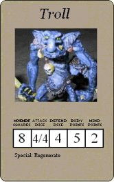

Troll
by Joshua Rice

Download the Troll Monster Card in Word format (388K)
Download the Troll Monster Card in Text format (54K)
The Troll is a large stupid beast related to the Ogre, but with the unnerving ability to regenerate even the most horrible wounds. Often found in the company of Orcs and Goblins, though they are easily bought into the service of Chaos by promises of food and shiny objects. Trolls may not be smart, but they are incredibly strong. They usually fight with their bare hands, but clubs made from small logs or large bones are not an uncommon sight.
Special Rules:
- Large Monster: Trolls are very large creatures (i.e. they take up two spaces, see notes below) and follow all the rules for Large Monsters.
- Two Attacks: Trolls may make two attacks per turn, each of which may be directed at a different target.
- Regenerate: Trolls can regenerate lost Body Points. At the beginning of each of Zargon's turns, the Troll regains one lost Body Point. However, if the Troll is ever wounded by any source of fire (including Fire spells) the Troll loses this ability permanently.
Notes:
I use the DragonStrike Troll model for my Trolls because it is the same size as the other large monsters from the Elf and Barbarian Quest packs, though I suppose any troll model would do, as long as it can be modified to take up only two spaces. The picture for the card is of a Games Workshop Stone Troll model (not recommended because of their size, but I thought it would be good since it is in keeping with the GW artwork of HQ).